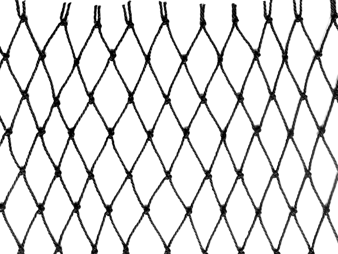
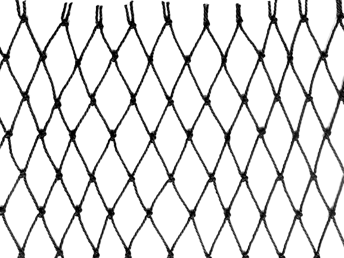

Empresa familiar
"Con más de 15 años de experiencia en protecciones, garantizamos un servicio rápido y confiable que prioriza la seguridad y la confianza de nuestros clientes. Nuestra larga trayectoria demuestra nuestro compromiso constante con la excelencia en la protección de espacios, brindando soluciones efectivas y proporcionando a nuestros clientes la tranquilidad que necesitan en su día a día."
 
